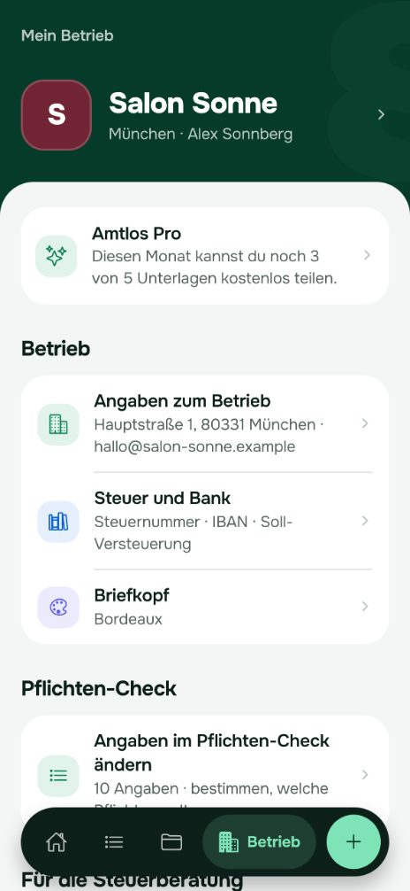

Welche Pflichten gelten für deinen Betrieb?
Amtlos zeigt dir, welche Pflichten für deinen Betrieb gelten, und erstellt Rechnungen und Unterlagen dazu. Auf dem iPhone, ohne Konto.
- Pflichten-Check mit Begründung, Rechtsgrundlage und Terminen
- Rechnungen fortlaufend nummeriert, mit GiroCode – als E-Rechnung (XRechnung) mit Pro
- Über 30 Vorlagen, Schritt für Schritt ausgefüllt, fertig als PDF
Bald im App Storefür iPhone
Kostenlos starten, Pro für alle, die jeden Monat Rechnungen schreiben.So sieht Amtlos aus
Echte Bildschirme aus der App, mit einem erfundenen Salon als Beispiel. Er hat mehr Angaben gemacht als der Kurz-Check oben, deshalb zeigt die App andere Zahlen.



Was Amtlos für dich erledigt
Rechtsgrundlagen
Pflichten kennen, statt sie zu suchen
Ein paar Fragen zu Branche, Rechtsform, Team und Kasse. Amtlos rechnet auf deinem iPhone aus, was gilt: Steuern, Personal, Arbeitsschutz, Datenschutz, Hygiene. Wiederkehrende Termine kommen als Erinnerung drei Tage vorher.
GoBD
Rechnungen und Belege, die stimmen
- Fortlaufende Nummer, Pflichtangaben werden vor dem Teilen geprüft
- Nach dem Teilen festgeschrieben, Korrektur per Stornorechnung
- GiroCode: Die Banking-App deiner Kunden füllt die Überweisung aus
- E-Rechnung (XRechnung) für Firmenkunden Pro
- Bei überfälligen Rechnungen eine Zahlungserinnerung senden
- E-Rechnungen empfangen und Belege per Foto erfassen
- Umsätze, Vorsteuer und Ausgaben für Voranmeldung und EÜR, nach Soll oder Ist – mit Pro per Tipp übernommen
- Paket für die Steuerberatung mit Buchungsstapel im DATEV-Format Pro
Art. 30 DSGVO
LMHV, IfSG
Unterlagen, die Prüfer erwarten
Hygieneplan, Hautschutzplan, Allergenliste, Gefährdungsbeurteilung, Betriebsanweisung, Unterweisung, Nachweis der Arbeitsbedingungen, Verzeichnis der Verarbeitungstätigkeiten, Datenschutzerklärung, Verfahrensdokumentation. Mit Vorschlägen für deinen Betrieb, gesetzt wie ein ordentliches Amtsdokument.
Kommt eine Kontrolle, fasst die Kontrollmappe deine aktuellen Nachweise zu Arbeitsschutz, Hygiene, Datenschutz und Personal in einem PDF zusammen – mit Deckblatt und Inhaltsverzeichnis.
ohne Konto
Deine Daten bleiben bei dir
Alles liegt verschlüsselt auf deinem iPhone. Es gibt kein Konto und keinen Amtlos-Server mit deinen Kunden- oder Mitarbeiterdaten. Sicherung als verschlüsselte Datei oder automatisch in deinem iCloud Drive Pro, auf Wunsch mit Face ID gesperrt. Kein Tracking.
Die E-Rechnung kommt für alle
Seit dem Wachstumschancengesetz gilt zwischen Unternehmen in Deutschland ein fester Fahrplan. Mit Pro erstellt Amtlos XRechnungen, die den KoSIT-Validator bestehen, das offizielle Prüfwerkzeug für die XRechnung.
Alle Unternehmen müssen E-Rechnungen empfangen können.
Pflicht zum Ausstellen bei mehr als 800.000 € Vorjahresumsatz.
Pflicht zum Ausstellen für alle übrigen Unternehmen.
Quelle: Bundesministerium der Finanzen, FAQ zur E-Rechnung. Ausnahmen gelten unter anderem für Kleinunternehmer und Kleinbetragsrechnungen bis 250 €.
Kostenlos starten
Was du brauchst, um deine Pflichten zu kennen und sauber zu bleiben, kostet nichts. Pro ist für alle, die Amtlos jeden Monat für Rechnungen nutzen. Den Preis zeigt dir zum Start der App Store.
Kostenlos
für immer
- Pflichten-Check und Erinnerungen
- Alle Vorlagen ausfüllen und ansehen
- Jeden Monat 5 Unterlagen als PDF teilen
- Belege und E-Rechnungen empfangen
- Sicherung als Datei, Wiederherstellen, Storno
Amtlos Pro
monatlich oder jährlich – Preis und Testzeitraum siehst du im App Store
- Unbegrenzt Unterlagen teilen
- E-Rechnung (XRechnung)
- Umsätze, Vorsteuer und Ausgaben per Tipp übernehmen
- Paket für die Steuerberatung (DATEV-Format)
- Automatische iCloud-Sicherung
- Briefkopf mit Logo und Hausfarbe
Häufige Fragen
Ersetzt Amtlos meine Steuerberatung?
Nein. Amtlos zeigt, was gilt, und bereitet Unterlagen vor. Für Beratung im Einzelfall bleibt deine Steuerberaterin oder dein Steuerberater zuständig. Die Inhalte werden derzeit fachlich geprüft.
Wo liegen meine Daten?
Nur auf deinem iPhone, verschlüsselt. Amtlos hat kein Konto und keinen Server mit deinen Unterlagen. Eine Sicherung erstellst du selbst als verschlüsselte Datei oder automatisch in deinem iCloud Drive (Pro).
Für wen ist Amtlos gedacht?
Für Einzelunternehmen, Salons, Cafés, Handwerksbetriebe, Freelancer und kleine GmbHs in Deutschland – alle, die keine eigene Buchhaltungsabteilung haben.
Was passiert, wenn ich mein iPhone verliere?
Deine Daten liegen nur auf dem iPhone. Hast du eine Sicherung – als verschlüsselte Datei oder automatisch in deinem iCloud Drive (Pro) –, holst du sie auf dem neuen iPhone mit deinem Passwort zurück. Ohne Sicherung sind die Daten weg, denn Amtlos hat keine Kopie.
Muss ich schon E-Rechnungen schreiben?
Empfangen können musst du sie seit 2025 – das geht in Amtlos kostenlos. Ausstellen müssen Unternehmen ab 2027 bei mehr als 800.000 € Vorjahresumsatz, ab 2028 alle übrigen. Ausnahmen gelten unter anderem für Kleinunternehmer und Kleinbetragsrechnungen bis 250 €. XRechnungen erstellt Amtlos mit Pro.
Ist Amtlos etwas für Kleinunternehmer?
Ja. Der Pflichten-Check fragt nach der Kleinunternehmerregelung. Rechnungen stellt Amtlos dann ohne Umsatzsteuer und mit dem passenden Hinweis aus, Belege erfasst es ohne Vorsteuerabzug.
Wie kündige ich Pro?
In den Einstellungen deines Apple-Accounts unter Abonnements, spätestens 24 Stunden vor Ende des Zeitraums. Danach nutzt du Amtlos kostenlos weiter.
Gibt es Amtlos für Android oder im Browser?
Zum Start gibt es Amtlos für das iPhone. Weitere Plattformen folgen.